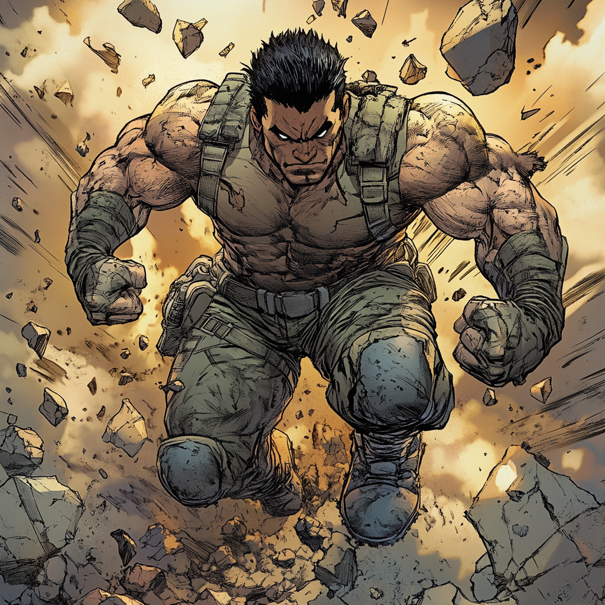

Groundbreak: The Unshakable Force

A Family of Builders
Gabriel “Gabe” Ortega was born into a family that shaped the world around them. His father, Manuel Ortega, was a construction foreman, a man whose hands molded steel and concrete into the foundations of homes and highways. His mother, Sofia, was a teacher, building futures out of books and lessons. His grandfather, Hector, was something else entirely—an old-school mountain man who saw the land as something sacred, something to be understood rather than conquered.
Growing up in Ponce, Puerto Rico, Gabe lived between these three philosophies. His father’s work taught him discipline, his mother’s teachings gave him knowledge, and his grandfather’s wisdom connected him to the land itself. While his older brothers, Julian and Marcos, sought careers in law and engineering, Gabe found his passion in the earth beneath his feet. He spent his childhood hiking through the mountains, learning the stories of shifting landslides and sleeping volcanoes, fascinated by the slow, inevitable movement of the planet.
Luis Rivera, his best friend since childhood, was the only one who truly understood his obsession. While others played baseball or spent their weekends at the beach, Luis and Gabe combed the hills, chasing tremors and sketching rock formations. Luis called Gabe el susurrador de la tierra—the earth whisperer—because he always seemed to know when the ground would shift before anyone else did.
The Fall That Changed Everything
Gabe’s love for geology took him far from home. After earning a scholarship to study at the University of California, he threw himself into the study of seismic activity, working alongside some of the best minds in the field. It was everything he had wanted—until the ground turned against him.
He was part of a research team conducting field tests near the San Andreas Fault when the earthquake hit. No warning. No gradual buildup. Just a sudden, violent shift that sent the world crashing down around them. The last thing Gabe remembered was Luis yelling his name before the ground beneath his feet vanished.
He fell.
The darkness should have swallowed him whole. He should have been crushed beneath tons of rock and dirt. But instead, something within him awoke. The ground did not reject him—it caught him. In the silence of the collapse, Gabe felt the pulse of the earth like a second heartbeat, the layers of stone pressing against him, waiting for his command. Without thinking, he pushed—and the earth obeyed.
When the dust cleared, he was standing atop a plateau that hadn’t existed moments before. His research team, battered but alive, stared at him in stunned silence. The canyon that had swallowed him had closed, reshaped into something new, something impossible.
The Call from Boston
Reports of the earthquake and its peculiar aftermath quickly spread through academic circles. Among those intrigued was Dr. Malcolm Raines, a renowned geophysics professor at MIT specializing in metahuman geological phenomena. Raines had previously consulted with the Avengers on cases involving individuals with earth-based powers, making him uniquely suited to recognize the anomaly for what it was—a new terrakinetic in need of guidance.
Reaching out through academic channels, Dr. Raines framed his inquiry as a research opportunity. Gabe, wary of becoming a scientific experiment, hesitated. But Raines wasn’t just interested in study—he offered solutions. “You don’t just have abilities,” Raines told him in their first call. “You have a fault line running through you. You need to learn how to manage it before it breaks.”
Raines suggested a place where Gabe could learn to control his newfound powers—a place that had experience training people just like him. The Boston Avengers Academy wasn’t about making heroes; it was about teaching control and responsibility.
Finding His Place
Arriving in Boston, Gabe didn’t think of himself as a hero. He accepted the invitation to the Academy not for glory or recognition, but because he knew he couldn’t live with himself if his powers caused harm again.
Assigned to Team Gamma, a group of young heroes still defining their identities, Gabe initially struggled to fit in. While others charged into combat with enthusiasm, he hesitated, haunted by the devastation his uncontrolled abilities could unleash.
Over time, however, he learned to trust himself. He discovered that his strength wasn’t in flashy displays of power but in the steadiness he provided. He became the team’s foundation—the one who held the line when others faltered, who reshaped the battlefield to give his allies the advantage.
The name Groundbreak reflected his ability to transform the earth, but it also spoke to his emerging role within the team. He was the anchor, the unyielding force that gave everyone else solid ground to stand on.
The Weight of Expectations
His family struggled with his new reality. His mother called every week, asking when he was going to use his degree and if this “superhero nonsense” was just a phase. Julian, ever the skeptic, considered it reckless. Marcos admired his power but worried about the risks.
Only Hector seemed to grasp the depth of Gabe’s transformation. “The land chose you,” Hector said when Gabe visited home. “It doesn’t do that without reason.”
Even Luis, still in Puerto Rico, offered words of wisdom. “You always listened to the earth,” he reminded Gabe. “Now it listens back. That doesn’t make you a hero, but it does make you responsible.”
Despite the doubts and the weight of expectations, Gabe found his place at the Academy. He didn’t seek fame or headlines. But when the ground trembled, when structures threatened to fall, when his team needed someone to keep them steady—Gabe knew he was exactly where he needed to be.